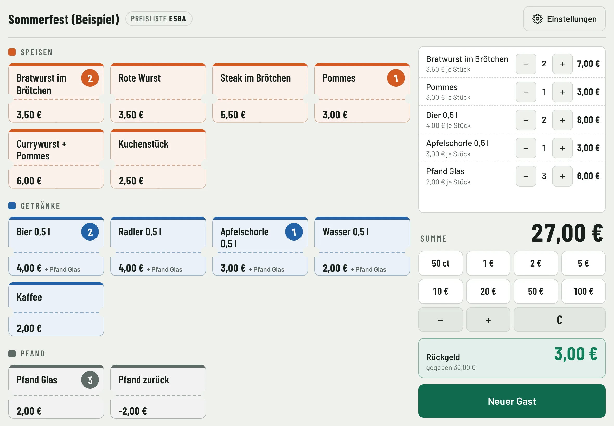
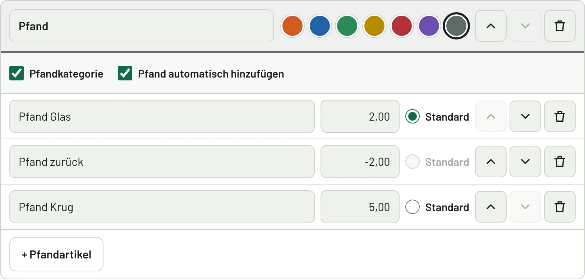
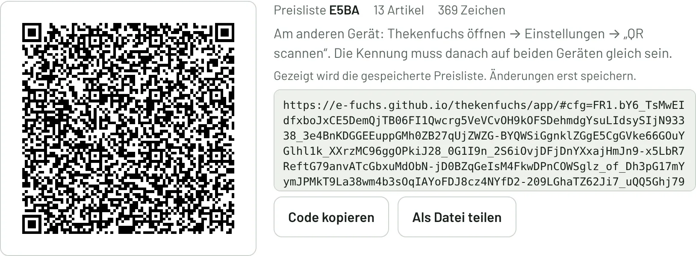
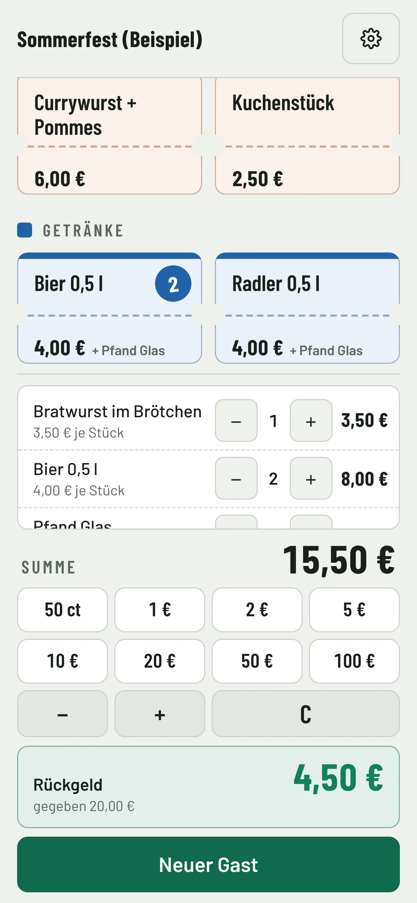

Produkte mit Preisen auf Tasten
Bratwurst antippen statt 3,50 eintippen. Zweimal antippen = zwei Stück.
Antippen statt Kopfrechnen – Thekenrechner für Vereinsfeste
Produkte mit Preisen auf Tasten · Pfandautomatik · Rückgeld auf einen Blick · Preisliste per QR auf alle Geräte verteilbar
Rechenhilfe, keine Kasse: Der Thekenfuchs speichert keine Verkäufe.

Tablet und Smartphone – iPad, Android, Windows
Bratwurst antippen statt 3,50 eintippen. Zweimal antippen = zwei Stück.
Geldtasten von 50 ct bis 100 €, mit „+“ und „−“ für mehrere Scheine. Auf Wunsch addiert jeder Tipp automatisch.
Sommerfest, Weinfest, Weihnachtsmarkt: je eigene Preisliste, schnell gewechselt. Einstellungen auf Wunsch mit PIN geschützt.
Getränke bringen ihr Pfand automatisch mit in die Summe. Glas, Krug, Rückgabe – alles in einer Pfandkategorie, mit Standard-Pfandwert.

Preise einmal pflegen, per QR-Code auf die anderen Tablets übertragen. Eine Kennung zeigt, ob alle Geräte gleich rechnen.

Einmal installiert, funktioniert er auch im Festzelt ohne Netz.
iPad, Android-Tablet, Windows-Tablet oder Smartphone. Kein App Store, keine Anmeldung.
Keine Steuerberatung – den Einsatz bitte mit dem Steuerberater des Vereins abstimmen.
Am Telefon
Läuft auch auf dem Smartphone – iPhone oder Android – für den Getränkestand ohne Tablet.
